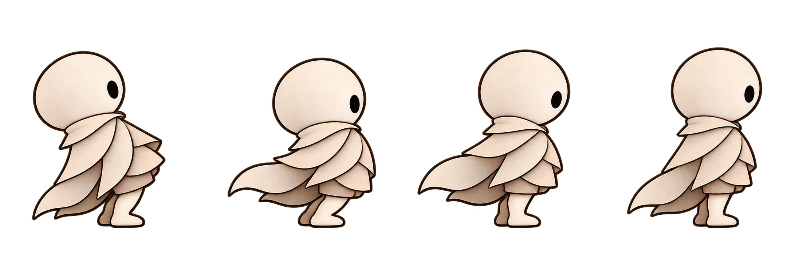

몸체의 짧은 색 변화와 먹 파편으로 맞는 순간을 강조합니다. 몸이 움찔하고 망토가 뒤따라 회복합니다. 첫 0.10초는 행동 정지, 이후 0.12초는 조작하면서 회복하는 시안입니다.
A / D로 이동하며 H를 눌러 행동 정지와 회복 구간을 비교할 수 있습니다. 따뜻한 색 변화 · 타격 지점의 먹 파편 · 미세한 화면 충격을 추가했습니다. 피격 강조 버튼으로 원화만 재생하며 비교할 수 있습니다. Unity 적용 전 동작 시안입니다.
